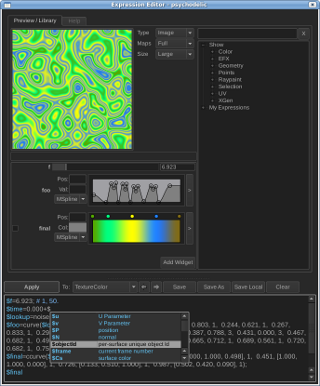

|
Arithmetic expressions appear in almost every animation system ever created. Being able to embed an expression language in a piece of custom software allows an amazing degree of artistic freedom. At Disney artists have enjoyed using expressions because they allow just enough flexibility without being overwhelming to non-programmer users. Developers have enjoyed them too for quick prototyping and deployment of fixes to production needs. HistoryAt Disney there have been various expression languages. SeExpr started as a language for our procedural geometry instancing tool, XGen. Work was done to generalize it into something that could be used in other contexts. Later it was integrated into paint3d, our texture painting facility, which opened the door to procedural synthesis. More recently, we have integrated it as a way of defining procedural controls to physical dynamical simulations and render time particle instancing. Expressions can be seen as a way of allowing customization of inner loops. This is contrast to scripting which is mostly aimed at gluing large parts of code base together. So in this sense, C++ forms the center of your application, python could be used to put pieces of it together, and SeExpr is used to customize tight inner loops. Major Features
Get Started
DemosWe have packaged several demo applications with SeExpr to show some potential uses. We include a simple ASCII graphing calculator (.mov), a Qt graphing calculator (.mov), a RenderMan shader and shadeop (.mov) to access expressions and a Qt particle simulator (soon to be released). These are all available in the src/demos directory of the source tree.
Artistic control is very important for film making. Expressions though essentially a mathematical concept can readily be used to create artist directed procedural content. One key we found was creating an interface around the expression language that automatically exposed parameters on defined variables. For example on the right you see a color ramp, slider, and spline ramp that are all automatically generated from just typing the expression below. Also, libraries of expressions are created by expert users and shared with other users. While we are not releasing the GUI for the expression editor, the expression language at its core is SeExpr. A demonstration of the expression editor can be seen in this video (YouTube) at time 3:18. Also take a look at our editor (.mov) and library (.mov) in action.
Usage ExampleSeExpr can be used in many evaluation contexts, and in each context it may have different bound variables, different customizable functions. As an example, a programmer could allow a user to generate an image by evaluating an expression at each point of the image and binding a u and v variable for the u,v parameter of the image. Then the user could write Noise Driving Color Interpolation
Ray Tracing SphereThis is an example of something you probably should not do with expressions. At the same time it is sometimes nice to prototype functions and techniques in expressions because of the interactivity.
Future PlansRecently we have been exploring a LLVM backend for native compilation on both GPUs and CPUs. We are also looking at adding a limited set of new language features. |


{kind=link}